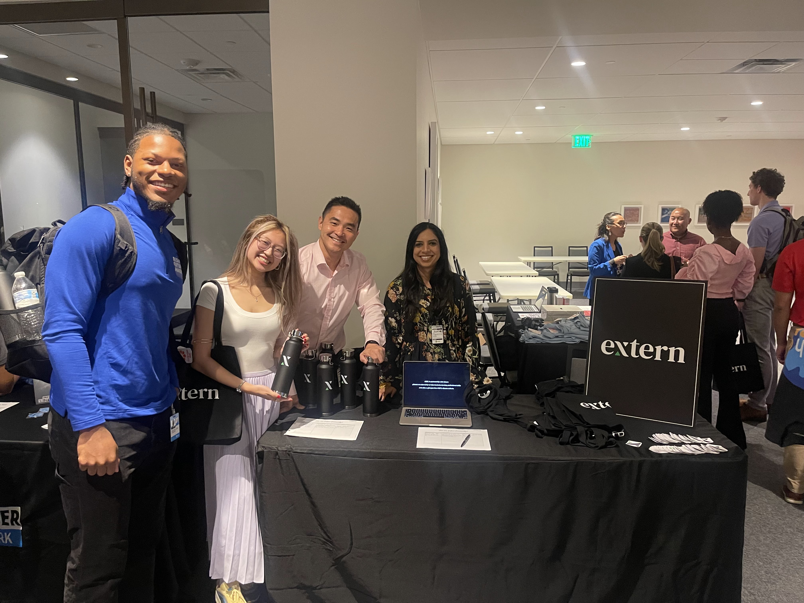

Extern
- Owned full B2B sales cycle from prospecting to close, securing partnerships with L'Oreal, Amazon, and Pfizer projected to impact 1,500+ students globally.
- Managed brand accounts and high-volume LinkedIn/email outreach to drive account growth and quarterly business targets.
- Explored AI-agent workflows for research, lead qualification, and outreach automation to scale outbound efficiency.